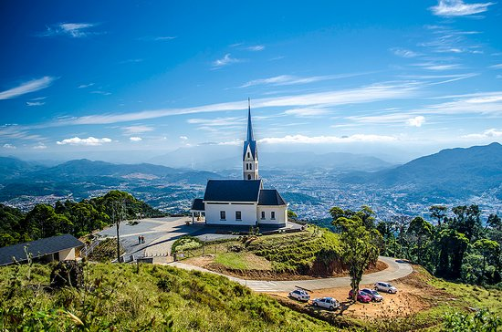
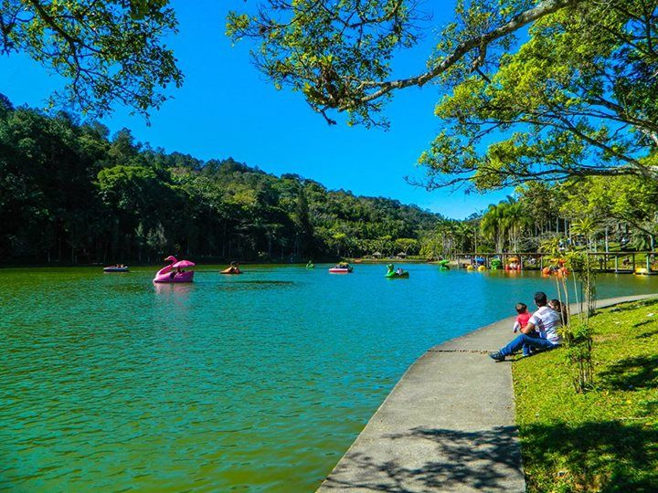
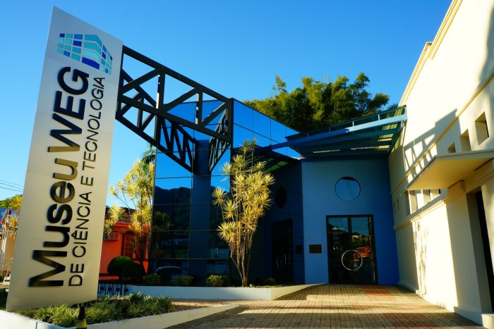
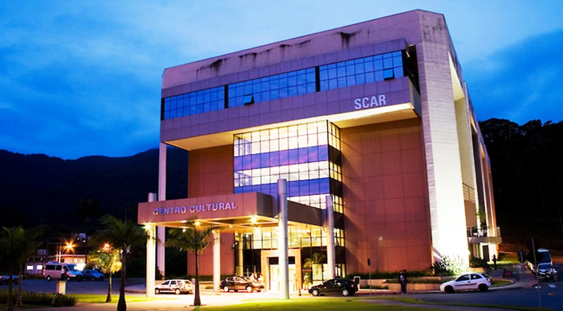
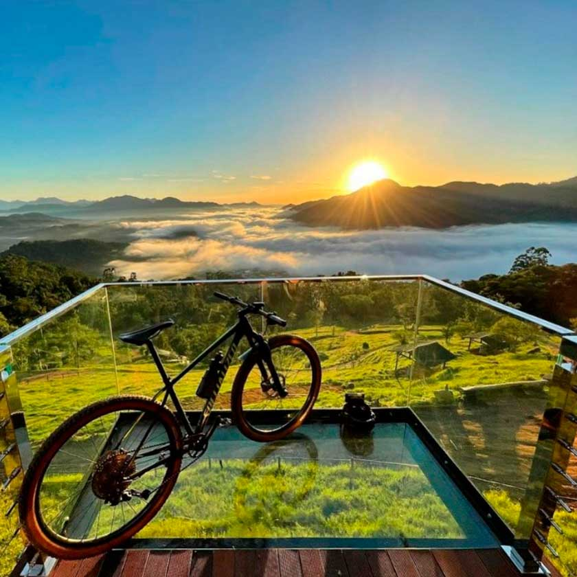

|  | Chiesetta Alpina: A Chiesetta Alpina, apontada como cartão postal de Jaraguá do Sul, um dos 30 templos que integram o Guia de Atrativos Religiosos de Jaraguá do Sul desde 2018, é dedicada a Albino Luciani e sua imagem está reproduzida no interior da edificação. Na parte externa, passou a ter uma efígie de metal. O Monumento à Fé do Imigrante está a 570 metros do nível do mar. Se localiza no Morro Boa Vista - Boa Vista, Jaraguá do Sul - SC, 89258-990 |
| Lagoa da Malwee: Possui uma ótima paisagem, além de estradas em volta de toda sua costa. Há choupanas bem distribuídas pela localidade, proporcionando uma excelente estadia e comodidade para o visitante no local. Está aberto todos os dias da semana, inclusive feriados, das 7h às 17h. Se localiza na Rua Wolfgang Weege, 770 - Parque Malwee, Jaraguá do Sul - SC, 89262-000 |
 |
|  | Museu Weg: No Museu WEG você tem a possibilidade de conhecer desde os processos geradores de energia até suas aplicações no cotidiano. Compreender os fenômenos e a forma como nossa sociedade se apropria deles, levará você a entender a complexidade das operações envolvidas no simples ato de acender uma lâmpada. Aberto das terças aos domingos, das 10h às 18h. Localizado na Av. Getúlio Vargas, 667 - Centro 89251-000 - Jaraguá do Sul – SC. |
| Scar: Fundada em 1956, foi criada inicialmente para abrigar uma orquestra de músicos amadores da cidade. A entidade definiu desde o princípio, dar oportunidade para a valorização da arte, que se manifestava na comunidade através de grupos isolados de música, teatro, canto coral e balé. Numa área construída de 10 mil m², distribuídos em 6 andares, o prédio é dotado de climatização e conforto térmico, elevadores e rampas de acesso. Aberta de segunda a sexta das 8h às 22h e nos sábados das 8h às 12h. |
 |
|  | Pico Malwee: O visitante pode contemplar uma ótima vista, quando no topo, de Guaramirim e Jaraguá do Sul. Possui 550 metros de altura, uma ótima escolha para quem gosta de trilhas. O tempo de sua subida é de aproximadamente uma hora e meia, considerando que você esteja andando. Sua localização é: R. Domingos Viêira - Barra do Rio Cerro, Jaraguá do Sul - SC, 89260-490 |
Copyright Lucas 2021©